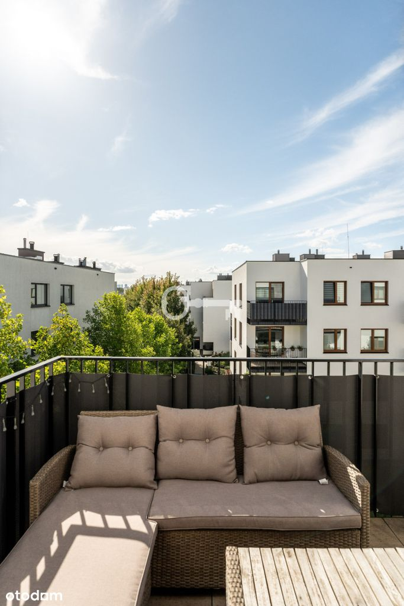
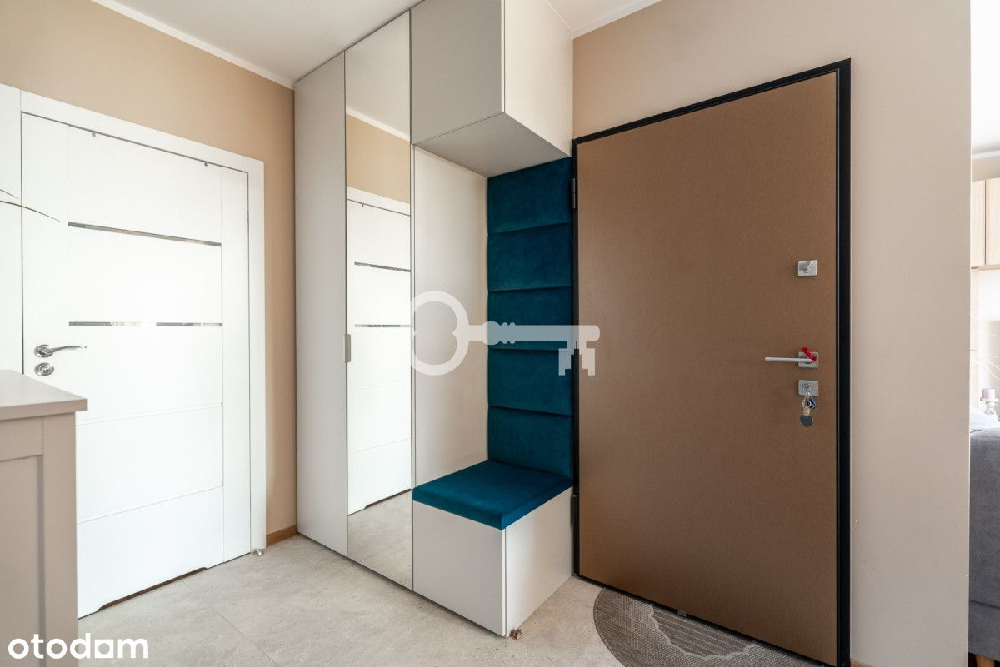
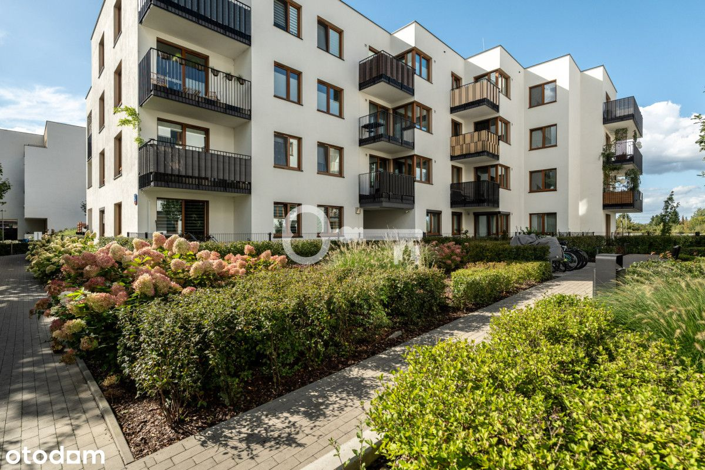
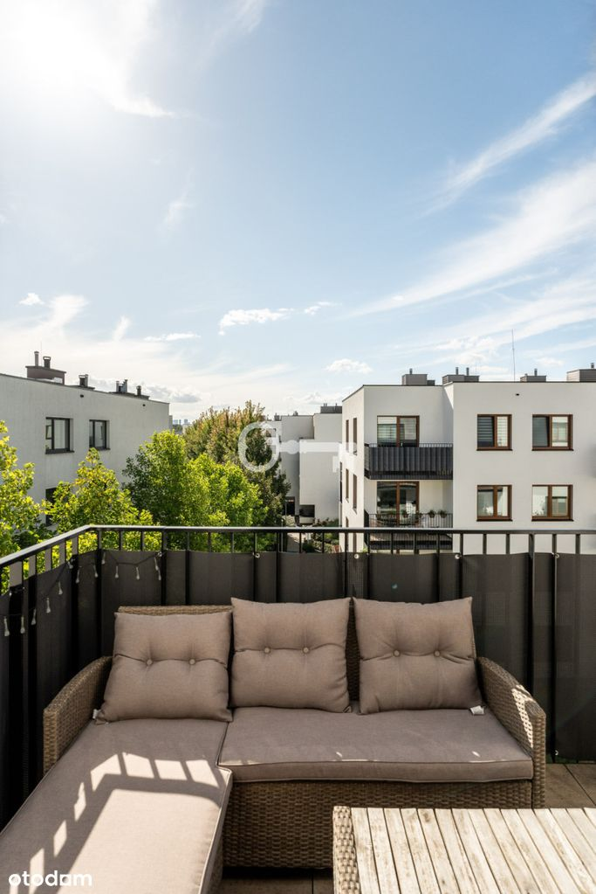
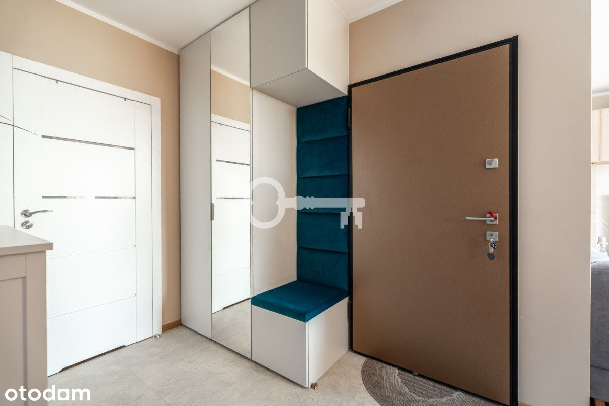
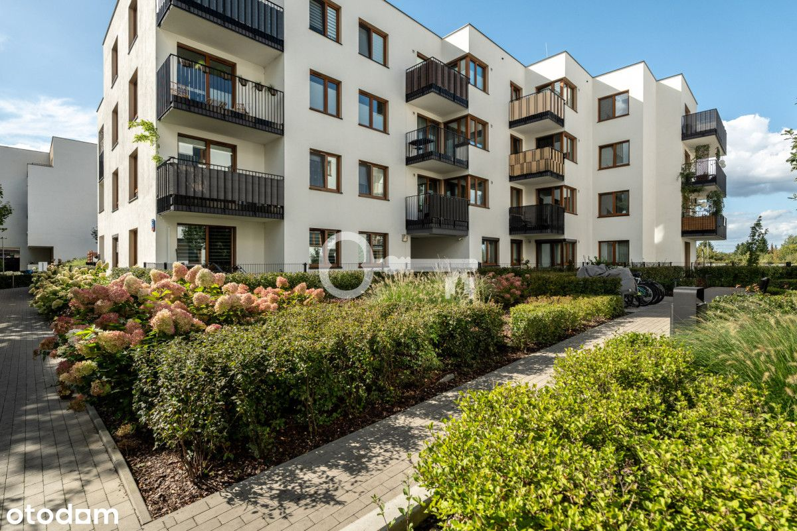

PRZYTULNE, JASNE MIESZKANIE Z WYJĄTKOWĄ LOGGIĄ
Przytulne | Strzeżone osiedle | Jasne i funkcjonalne | Gotowe do zamieszkania | Idealne dla pary, rodziny lub pod inwestycję | Przestronna loggia z widokami
Przytulne, jasne mieszkanie z wyjątkową loggią i widokiem na wysokie budynki Warszawy, położone na strzeżonym osiedlu w Targówku. To propozycja dla osób ceniących komfort codziennego życia w spokojnej okolicy, z łatwym dostępem do miejskiej infrastruktury. Funkcjonalne wnętrze jest gotowe do zamieszkania - idealne zarówno dla pary, rodziny z dzieckiem, jak i inwestora.
*****
ROZKŁAD POMIESZCZEŃ:
* Salon z aneksem kuchennym,
* dwie sypialnie,
* łazienka z wanną,
* loggia.
STANDARD:
Mieszkanie o powierzchni 62,19 m², z jasnymi wnętrzami wypełnionymi dużą ilością naturalnego światła. Przemyślany układ pomieszczeń tworzy komfortową przestrzeń do życia. Dodatkowym atutem jest loggia, która zapewnia miejsce do relaksu na świeżym powietrzu. Całość cechuje przytulność, dzięki czemu mieszkanie jest gotowe do zamieszkania od zaraz - bez konieczności dodatkowych nakładów.
LOKALIZACJA:
Mieszkanie położone jest na spokojnym, strzeżonym osiedlu w Targówku, w sąsiedztwie licznych sklepów, punktów usługowych oraz przedszkoli i szkół podstawowych, co sprawia, że codzienne życie jest wygodne i komfortowe. W pobliżu znajdują się przystanki autobusowe oraz stacja kolejki podmiejskiej „Zacisze-Wilno”, a także dogodny dostęp do stacji metra „Trocka”, co zapewnia szybki dojazd do centrum Warszawy. Okolica oferuje także wiele możliwości aktywnego wypoczynku - tereny zielone idealne na spacery oraz korty tenisowe i kluby fitness, a pobliskie centra handlowe gwarantują wygodny dostęp do wszystkich potrzebnych usług.
Doskonałe dla osób szukających komfortowego mieszkania w zielonej, spokojnej okolicy, a jednocześnie z łatwym dostępem do miejskiej infrastruktury.
INFORMACJE DODATKOWE:
* Możliwość zakupienia miejsca postojowego w garażu podziemnym dodatkowo płatne 40 000 zł oraz komórki lokatorskiej 25 000 zł.
Zapraszam do kontaktu!
——————————————
KONTAKT:
Maja Olczyk : tel. +48 532 105 144
Przedstawiona wyżej oferta nie jest ofertą handlową w rozumieniu przepisów prawa, lecz ma charakter informacyjny. Partners International dokłada starań, aby treści przedstawione w naszych ofertach były aktualne i rzetelne. Dane dotyczące ofert uzyskano na podstawie oświadczeń wynajmujących.
Jako agencja nieruchomości pobieramy wynagrodzenie w formie prowizji.
——————————————
CONTACT:
Maja Olczyk : tel. +48 532 105 144
The above information is not a commercial offer for the purposes of the law, but is informative. All data relating to the real estate was obtained on the basis of statements of the Landlords.
As a real estate agency we charge a commission.
——————————————
COZY, BRIGHT APARTMENT WITH A UNIQUE LOGGIA
Cozy | Guarded housing estate | Bright and functional | Ready to move in | Ideal for a couple, family, or investment | Spacious loggia with views
A cozy, bright apartment with a unique loggia and views of Warsaw's tall buildings, located in a secure housing estate in Targówek. This is an offer for people who value the comfort of everyday life in a quiet neighborhood, with easy access to urban infrastructure. The functional interior is ready to move in - ideal for a couple, a family with a child, or an investor.
*****
ROOM LAYOUT:
* Living room with kitchenette,
* two bedrooms,
* bathroom with bathtub,
* loggia.
STANDARD:
The apartment has an area of 62.19 m², with bright interiors filled with plenty of natural light. The well-thought-out layout of the rooms creates a comfortable living space. An additional advantage is the loggia, which provides a place to relax in the fresh air. The whole apartment is cozy, making it ready to move in immediately - no additional investment required.
LOCATION:
The apartment is located in a quiet, guarded housing estate in Targówek, in the vicinity of numerous shops, service outlets, kindergartens, and elementary schools, which makes everyday life convenient and comfortable. There are bus stops and the “Zacisze-Wilno” suburban railway station nearby, as well as convenient access to the “Trocka” metro station, which provides quick access to the center of Warsaw. The area also offers many opportunities for active recreation - green areas ideal for walks, tennis courts, and fitness clubs, while nearby shopping centers guarantee convenient access to all necessary services.
Perfect for those looking for a comfortable apartment in a green, quiet area, yet with easy access to urban infrastructure.
ADDITIONAL INFORMATION:
* Possibility to purchase a parking space in the underground garage for an additional PLN 40,000 and a storage room for PLN 25,000.
Feel free to contact me!

 
